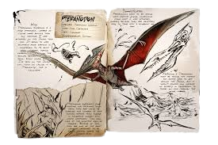

- Species
Pteranodon wyvernus
- Time
Late Cretaceous
- Diet
Carnivore
- Temperament
Skittish
Pteranodon
Table of Contents
Overview
This section is intended to be an exact copy of what the survivor Helena Walker, the author of the dossiers, has written. There may be some discrepancies between this text and the in-game creature.

Wild
Pteranodon wyvernus is a large pterosaur, capable of flying more quickly than any creature I have witnessed on this Island thus far. It seems to have relatively poor stamina in comparison to its quick speed, however, making frequent pit stops on the beaches before taking off again. While other humans I've seen on the Island still insist on calling it a Pterodactyl, this is inaccurate. Pteranodon wyvernus's poor fighting and defensive skills mean they are likely to scavenge any number of dead animals rather than engage in dangerous combat with other creatures. They also flee at the slightest sign of trouble. Because of this, they are one of the most common creatures to be found darting across the Island's skies.
Domesticated
Pteranodons seem to be among most popular flying companions from what I have witnessed, possibly because they are relatively easy to tame with a slingshot or bow. Mounting a Pteranodon must be among the fastest and safest ways to get around the Island, but it doesn't provide any measure of secrecy in comparison to travel on land through the dense foliage.
Behavior
The Pteranodon is skittish and not aggressive whatsoever, and will fly away when attacked. However, if an egg is stolen from a Pteranodon, it will become aggressive with an average aggravation range. The corrupted version will be extremely aggressive, prioritizing players over basically anything.
Taming
Taming a Pteranodon requires tranquilizing it while it is on the ground. Tranq Arrows or Darts are effective. Once unconscious, feed it raw meat, raw prime meat, or its preferred Kibble to tame it efficiently. Using a Bola to immobilize it makes the process much easier.
Uses
The Pteranodon is an excellent transportation mount due to its speed and ability to fly. It can also perform a barrel roll attack, which is effective in combat situations. Additionally, it is a good early-game flyer for scouting and resource gathering in hard-to-reach places.